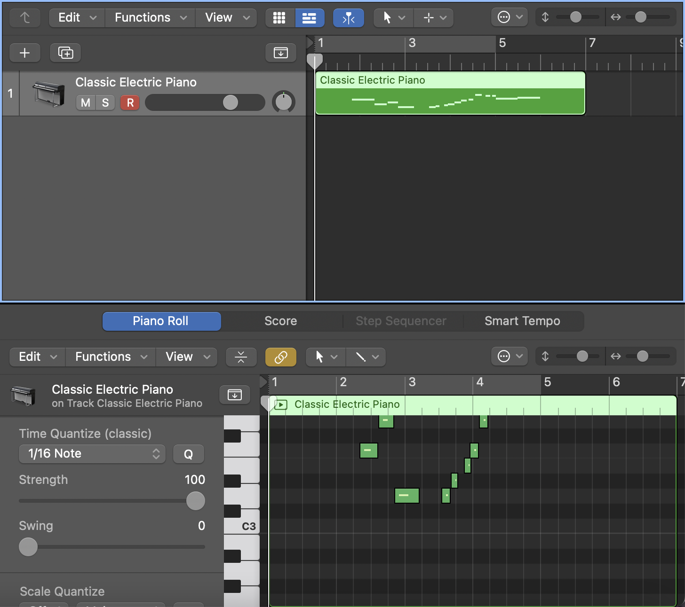

Unlike previous projects, we were free to implement any type of embedded device we were interested in based on the skills acquired throughout the semester.
As discussed in Module 2, MIDI controllers have become extremely commonplace and a necessity in modern music-making for many. While my Casio SA-46 is nice and portable, it only outputs analog audio data but does not function as a MIDI controller. Similarly portable controllers would cost 2-3 times the Casio's price. However, as Module 2 demonstrated the ability of an Arduino board to send MIDI data to my Mac, the ability to fully convert the Casio into a MIDI controller seemed appealing. As such, my goal was to create a device that could transform the Casio's audio signals into MIDI data. For details on how this was accomplished, see the project's README. With this device, a musician with a non-MIDI keyboard can utilize it just as a MIDI controller with minimal additional hardware, making MIDI more accessible without having to type notes on a computer keyboard.

Fig. 0: This keyboard has only 2 outputs: power and audio out but doesn't have a MIDI out. Let's change that
My general vision of this project was to have the logic on the board to function as a black box that a musician could plug their instrument into and get MIDI data out of. As such, the enclosure was designed to be as minimal in size as possible, wrapping around the footprint of the board itself. Additionally, while the board has many ports to plug into, the only cutouts provided are for the ports used; namely the line in and USB out. This along with the laser cut box help to give the general feel of a black-box product that one can simply "plug and play" into.

Fig. 1: The AudioKit board fits snugly into the laser cut enclosure

Fig. 2: The Casio Piano can be plugged into the box just as with any other audio component such as an audio interface
Once the code is flashed onto the board, the device can simply be plugged into an instrument and computer. Once the Python script is running, a user can simply play notes and see the result in their MIDI software. However, given the pain point of running an additional Python script that functions as a driver, I would be interested in creating a future iteration of this device that runs on a board that supports the USBMIDI Library, making it truly a "plug and play" device. Additionally, having more interaction, potentially with a knob allowing certain parameters to be altered at runtime such as the cutoff magnitude would allow more interoperability with different instruments without the need to reflash code.
Fig. 3: After the device sends MIDI data into Logic, the piano roll can be edited just as if it were played with a commercial MIDI controller